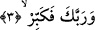
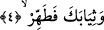

3. Sâdece Rabbini büyük tanı.
Yâni yüceltmeyi sâdece Rabbine yap. Yüceltmek, Allah Teâlâ’yı inanç, söz, yücelikle
nitelemek puta tapanların ve öteki zâlimlerin söylediklerinden Allah’ı tenzih etmek
demektir.
Rivâyet olunduğuna göre bu âyet-i kerîme nâzil olduğu zaman Peygamber (s.a.)
Efendimiz; “Allahu ekber” der. Ardından eşi Hz. Hatice de “Allahu ekber” [177] der ve
ferahlar. Peygamber (s.a.)’e gelenin bir vahiy olduğunu kesin biçimde anlar. Çünkü
şeytan Allah’ı ululama/tekbiri emretmez. “Rabbini yücelt” emri içerisine namazların
tekbirleri de -peygamberliğin ilk dönemlerinde namaz farz olmamakla birlikte- namaz
tekbirleri dâhildir. Çünkü namaz bir takım duruşlardan ve vücudd hareketlerinden
ibârettir. Bütün bunlar bir kayıtlama/belli bir mekânda yeralma demektir. Oysa Allah
bütün belli bir mekânda yer tutmadan münezzehtir. Şu hâlde namazdaki bütün konum ve
durumlar için tekbir getirmek gerekli olmuştur. Çünkü -sahih hadiste ifâde olunduğu
üzere- “Allah’ın zâtı namazda, kulun vechi/yüzü ile karşı karşıya bulunur.” [178]
“Fekebbir/rabbini yücelt” âyetinin başındaki “fâ” ifâdenin taşımış olduğu “şart”
mânâsı itibari iledir. Burada sanki şöyle deniyor: Hangi şey meydana gelirse gelsin sen
Allah’ı yüceltmeyi O’nu tâzimle vasıflamayı bırakma.
Ya da ikinci âyetteki “kalk” emrinden maksadın Hz. Peygamberin Rabbını yüceltmesi
ve şirkten tenzih etmesi olduğuna delâlet etmek için getirilmiş olabilir. Çünkü bilinmesi
gereken ilk şey yaratıcıyı tanımak sonra O’nu zâtına lâyık olmayan şeylerden tenzih
etmektir. Bu açıklama göz önüne alındığında “fa” yukarda söylediğimiz gibi “cezâiyye”
değil, “ta’kibiyye” olmuş olur.
Bilmek gerekir ki; Allah’ın ululuk ve yüceliği kendi zâtı ile kaimdir ve kendisine
bağlıdır, yoksa bir başkasının yüceltmesine bağlı değildir. Allah Teâlâ başkasının
sonradan yüceltmesi ile yücelmekten çok büyüktür. Bu nedenle Peygamber (s.a.)
Efendimiz, Mi’rac gecesi şöyle demiştir: “Ben seni hakkıyla, lâyık olduğun gibi
övemem. Sen kendini nasıl övmüşsen öylesin.” [179] Şu hâlde kendi zâtını yücelten,
öven Allah’ın bizâtihi kendisidir. O’nun övgüsü ezelden ebede kadar kadimdir, ezelîdir.
4. Elbiseni tertemiz tut.
Yâni elbiseni temiz olmayan şeylerden muhâfaza ile necis olan şeylerden koruyarak
temiz tut ve kirlendiğinde temiz su ile yıka. Çünkü temiz olan bir müminin -ister
namazda ister namaz dışında- pis bir nesneyi üzerinde taşıması çirkindir. Bir de
elbiseni kısaltmak sûretiyle yine temiz tut. Çünkü elbisenin uzun olması hâlinde etekleri